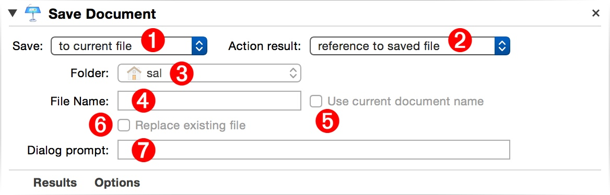
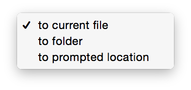
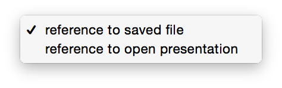

Delivering essential functionality, the “Save Document” Automator action is used to save open Keynote presentations.
The Action Information
| Input: | AppleScript reference(s) to the open Keynote document(s) that are to be saved. |
| Output: | (user-selectable) This action returns either:
|
| Parameters: | User-settable parameters include:
|
| Related: | Other actions that often precede this action:
|
The Action Interface

1 Saving Destination - This popup menu offers three options for determining the saving method (⬇ see below )

2 Action Result - This action can return either references to the opened documents, or the saved files (⬇ see below )

3 Destination Folder - If the Saving Destination 1 is set to folder, choose the folder in which to place the copies of the saved Keynote documents.
4 Saved File Name - If the Saving Destination 1 is set to folder, enter the name for the saved Keynote document file.
5 Use Current Document Name - If the Saving Destination 1 is set to folder, select this option to use the current name of the Keynote document to be saved as the name of the saved file.
6 Replace Existing Files - If the Saving Destination 1 is set to folder, select this option to delete any existing copies of the saved document file.
7 Save Dialog Prompt - If the Saving Destination 1 is set to prompted location, enter the text for the choose file name dialog.